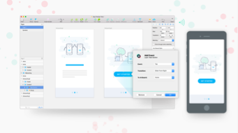

Lifestyle
Learning Design on a Budget
When it comes to learning design/development it’s important to ensure you’re using capable equipment. Whether you’re a student or going the self-taught route, you’ll probably prefer to keep costs to a minimum. So to help you (and your bank account) I’ll be discussing ways to save money on hardware & software without sacrificing quality. Plus, I’ve added a list of great learning resources.
Read More
Prototyping
Mirr.io: Turn Sketch files into shareable prototypes, without leaving sketch

We’ve been using Mirr.io at Normally, in various guises for around 6 months. It was borne from our frustrations with online tools, where we found ourselves spending a crazy amount of time faffing. Most of our thinking and designing was done in Sketch, so it slowed us down if we had to export, log-in, upload, re-create, draw hotspots, edit timelines etc, etc… We didn’t want to leave Sketch!
Read More
User Interface
From MS-DOS to Material Design: A Brief History of User Interfaces
A while back, we took a look at how to get started in user experience (UX) design. In this article, we’re going to follow that up by looking in a little more depth at one aspect of UX — user interface (UI) design.
In this installment, we’ll explore the importance of interfaces, examine how UI design is distinct from UX design, and take a brief look at the history of UI design. Stay tuned for Part 2, where we’ll discuss what UI design means today, check out some case studies, and point you to further resources.
Read More